| Interface | - Quelques noeuds de base |
Pour construire notre jeu, nous allons utiliser différents noeuds, ceux-ci sont des briques de base que l'on va assembler et améliorer par la suite à l'aide de script pour créer des objets complexes et des éléments de Gameplay. Ils permettent de gérer automatiquement différents éléments de notre jeu (Les collisions, les sons, l'affichage de texture, etc...). Comme leur objectif est d'être le plus polyvalent possible, s'ils sont seuls, ils n'apportent pas beaucoup et c'est à nous de concevoir leur interaction à l'aide d'un script. Dernière remarque, la majorité des noeuds n'ont pas de représentation graphique, cela est limité à un petit nombre d'entre eux.
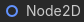
)Pour les jeux en 2 dimensions, c'est le noeud de base, il sert à placer un objet dans le monde à un emplacement précis. Voici quelques exemples de son utilisation :
Avec l'organisation suivante et lorsqu'on fait tourner l'arme, le point de départ de la balle tourne avec et permet d'avoir la position :
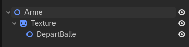
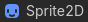
)Ce noeud est le noeud de base pour afficher une texture. Il est principalement utilisé pour des objets non animés car la texture affichée est fixe. Dans l'inspecteur, il est possible d'utiliser différents types de Ressource au lieu d'un fichier image pour afficher une texture :
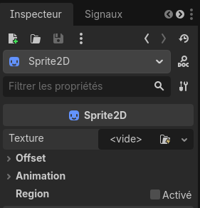
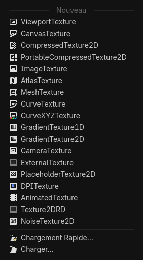
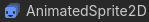
)
Ce noeud permet d'afficher des textures simples mais animées telle une image GIF. Il permet de créer plusieurs animations et de gérer l'exécution de celles-ci.
Pour utiliser ce noeud, il faut d'abord créer un SpriteFrames depuis l'inspecteur. Celui-ci, une fois sélectionné, ouvre un nouveau menu en bas d'écran permettant de créer les différentes animations.
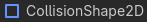
)Ce noeud permet de définir une forme de collision qui sera utile dans les noeuds suivants. Seul, il ne fait rien. Vous pouvez définir plusieurs types de formes de collision avec leurs différents paramètres. Chaque forme peut aussi se voir attribuer une couleur, mais cela n'est utile que dans l'éditeur car les collisions ne sont pas visibles en jeu.


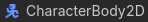
)Ce noeud est le coeur de notre jeu. Il permet de gérer le déplacement d'un objet en respectant les collisions et en lui assignant une vitesse de déplacement. Il permet en particulier de créer un personnage jouable/contrôlable. Ce noeud seul ne fait rien, il doit obligatoirement être accompagné d'un script pour définir les actions et les interactions de celui-ci. Lorsque ce noeud est seul, il indique une erreur car il doit être accompagné d'une forme de collision pour pouvoir les détecter. Il est possible de définir plusieurs formes de collision pour un même objet et ainsi construire une collision globale plus complexe. Chaque forme de collision, un noeud CollisionShape2D doit être mis comme enfant de notre CharacterBody2D. Voici un exemple très simple d'un personnage jouable sur une plateforme :


extends CharacterBody2D
@export var vitesse = 300.0
@export var force_saut = -400.0
# Par default, les touches liés a l'interface utilisateur (UI) sont utilisées.
# -> ui_accept ui_left ui_right
# Il est préférable de créer nos propres touches personnalisées.
func _physics_process(delta: float) -> void:
# Ajout de la gravité.
if not is_on_floor():
velocity += get_gravity() * delta
# Gestion du saut.
if Input.is_action_just_pressed("ui_accept") and is_on_floor():
velocity.y = force_saut
# Récupération des touches gauche et droite, et gestion des mouvements.
var direction := Input.get_axis("ui_left", "ui_right")
if direction:
velocity.x = direction * vitesse
else:
velocity.x = move_toward(velocity.x, 0, vitesse)
move_and_slide()
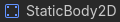
)Ce noeud permet de créer un objet solide mais statique (qui ne bouge pas). Il doit contenir une CollisionShape2D pour fonctionner et comme pour le CharactedBody2D, il est possible d'en assigner plusieurs pour définir une collision plus complexe. Cet objet n'a aucun rendu graphique, il est donc souvent nécessaire de lui ajouter un Sprite2D pour être visible. Un exemple est présent avec la plateforme précédente.
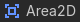
)
Ce noeud ne définit pas un objet solide mais permet de détecter lorsqu'un objet physique entre à l'intérieur de sa zone de collision. Il doit contenir une CollisionShape2D pour fonctionner et comme pour le CharactedBody2D, il est possible d'en assigner plusieurs pour définir une collision plus complexe. Seul, il ne fait rien et nécessite un script pour définir des actions à effectuer lorsqu'il détecte un objet. Il faut pour cela utiliser les signaux qu'il possède :

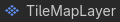
)Ce noeud est particulièrement utile pour construire des mondes et des environnements utilisant plusieurs fois les mêmes ressources graphiques. Il permet de créer un monde composé de tuiles :
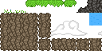
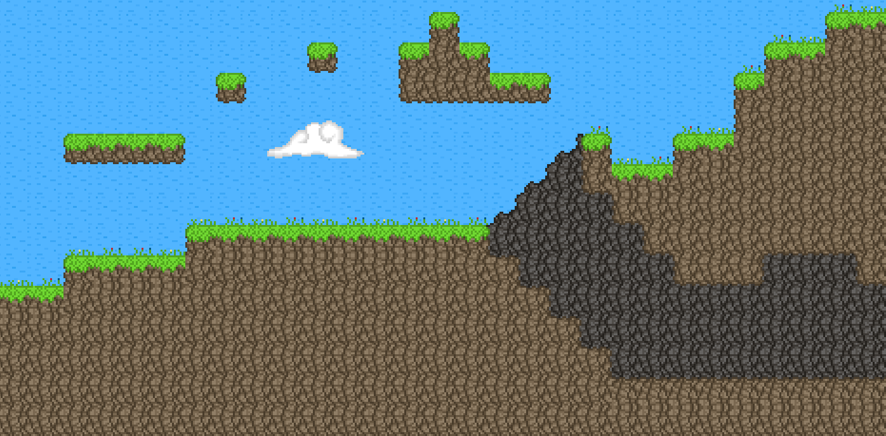
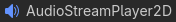
)Ce noeud permet de jouer des sons spécialisé (qui ont une position dans notre jeu). Cela permet d'avoir une atténuation avec la distance et une différence sur la provenance (Gauche, droite, dessus, dessous).
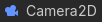
)Ce noeud permet de définir une caméra. Cela permet de déplacer la zone visible de l'écran de jeu, de zoomer et dézoomer, ou encore de passer d'un plan de visibilité à un autre. Elle peut être attachée à un objet pour se déplacer avec lui, typiquement à un joueur.